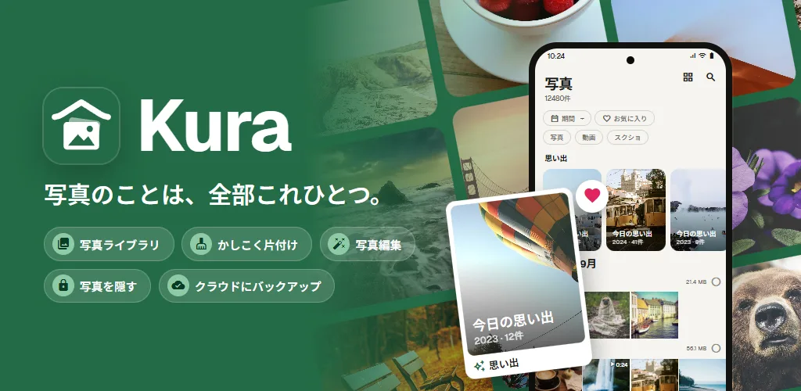
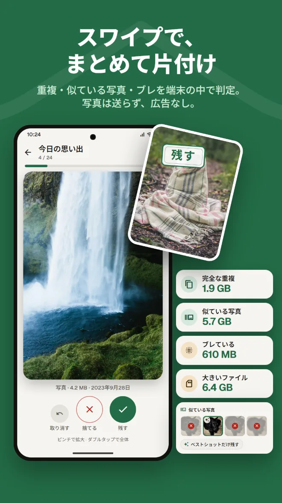
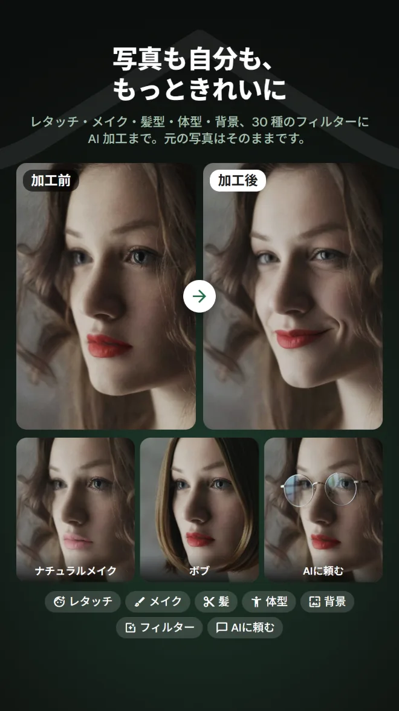
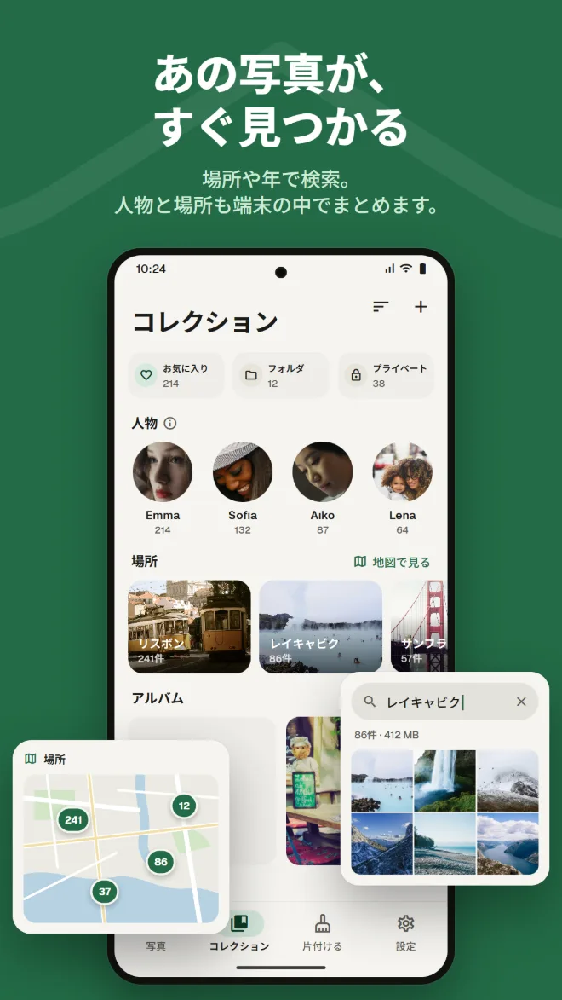
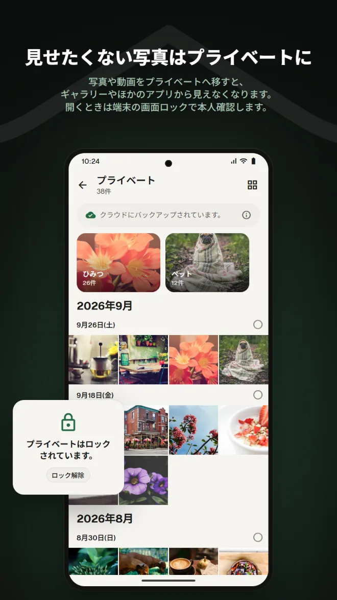
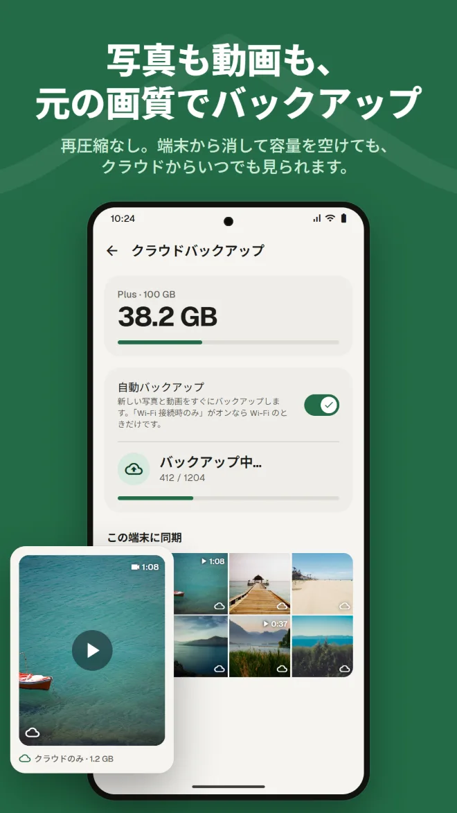
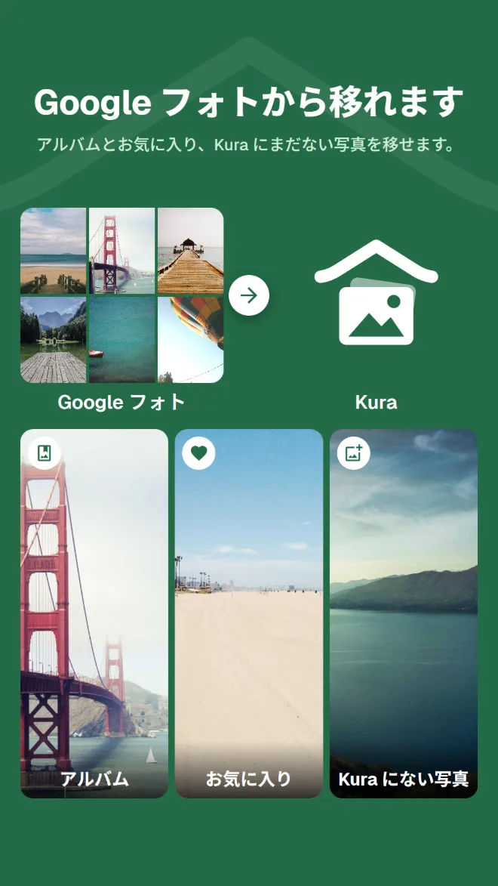

中身で検索
場所、写っているもの、写真の中の文字で探せます。
ギャラリー、片付け、AI 編集、プライベート、バックアップ、Google フォトからの移行。Kura なら、写真のアプリをいくつも使い分けなくて済みます。
Android 11 以上 · 写真の閲覧・整理・削除は無料 · Google アカウントでログイン

見るのはギャラリー、容量を空けるのは片付けアプリ、加工は別のアプリ、バックアップはまた別のサービス。行き来するたびに、同じ写真を探し直していませんか。
Kura は、そのすべてを 1 つのライブラリでできます。
同じ写真を、同じ場所で、見る・片付ける・直す・預ける。
ライブラリから片付け、編集、移行、バックアップまで、ひと通り見られます。
完全な重複、似ている写真、ブレている写真、大きいファイルを端末の中で見つけます。右にスワイプで残す、左で捨てる。空けられる容量もすぐ分かります。

レタッチ・輪郭・メイク・髪・背景に、30 種のフィルターと調整・切り抜き。料理をおいしそうに見せるフィルターや、全身のスタイルを整えるボディ加工もあります。保存はコピーなので、元の写真はそのままです。

撮影日ごとのグリッドに、過去の同じ日の思い出。場所・写っているもの・写真の中の文字で検索でき、顔は端末の中で人物ごとにまとまります。

写真や動画をプライベートへ移すと、ギャラリーやほかのアプリから見えなくなります。開くときは端末の画面ロックで本人確認します。

写真と動画を再圧縮せずにバックアップ。バックアップ済みのものは端末から消して容量を空けても、クラウドからいつでも見られます。

Google Takeout の .zip をアプリか Web 版から送るだけ。アルバムとお気に入り、Kura にまだない写真を移します。展開は Kura のサーバーが裏で行うので、アプリもブラウザも閉じて大丈夫です。

クラウドに預けた写真は、Web 版でもアプリと同じように見る・整理する・片付ける・編集する・共有する・アップロードできます。お気に入りはアプリと同じになります。
Web 版を開くGoogle アカウントでログイン · 日本語と英語
毎日使うギャラリーとして必要なものは、ひと通りそろっています。
場所、写っているもの、写真の中の文字で探せます。
顔は端末の中で人物ごとにまとめ、撮った場所は地図で見られます。
過去の同じ日に撮った写真が、ライブラリの上に並びます。
明るさや色の調整、切り抜き、ブラシ。料理向けのフィルターも。
有効期限とパスワードを付けて、アプリを持っていない人にも送れます。
開くたびに端末の画面ロックで確認。プライベートは隠しておくこともできます。
入れてすぐ、いつもの写真が整理された状態で並びます。
Google Play から入手（Android 11 以上）
「すべて許可」でライブラリ全体を読み込む
Google アカウントでログイン
整理はすぐに。バックアップは必要になったら
広告はありません。お金がかかるのは、クラウドを使うときだけです。
端末の中でできること
Google Play の月額課金。いつでも解約できます
価格は Google Play がお住まいの国の通貨で表示します。
写真が端末の外に出るのは、あなたが送り先の分かる操作をしたときだけです。
重複・ブレ・顔・物・文字の判定は端末の中で行います。整理のために写真を送ることはありません。
ファイルを消す前には Android が確認します。捨てた写真は、ゴミ箱を空にするまで残ります。
ログインしても、サーバーに残るのは Google アカウントの ID だけ。名前やメールアドレスは送りません。
AI 加工で送るのは顔の周りの範囲だけ。写真も結果もサーバーに残しません。
広告なし · 写真の閲覧・整理・削除は無料